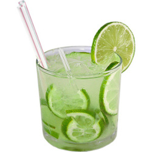
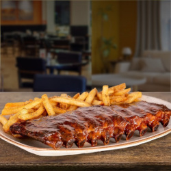

Gostosuras

Caipirinha
Enquanto trabalhava na praia, aprendi a preparar bebidas e minha preferida delas foi a caipirinha.

Costela
Uma das minhas comidas preferidas, se não a minha comida preferida é a costela, pricipalmente a do Outback.

Tiago
Não poderia deixar de fora a maior gostosura que eu conheço. Tiago, simplesmente delicioso.